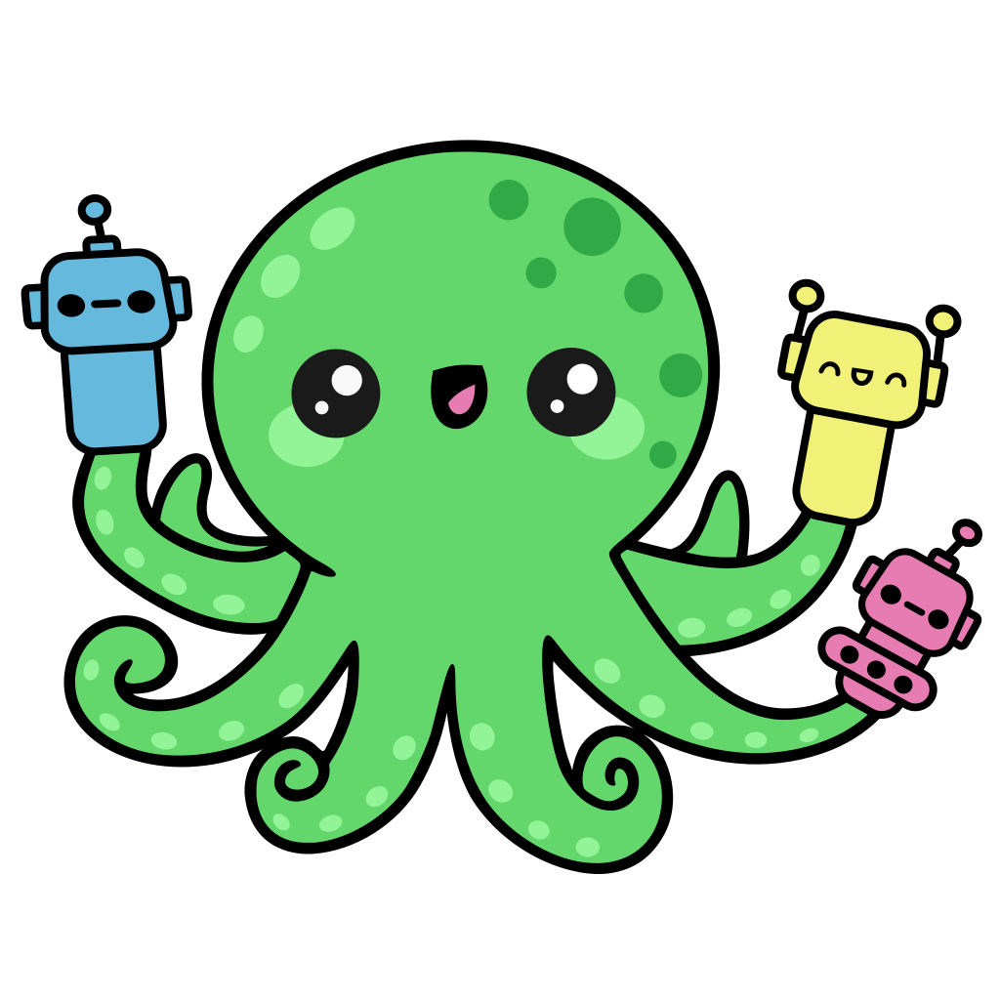
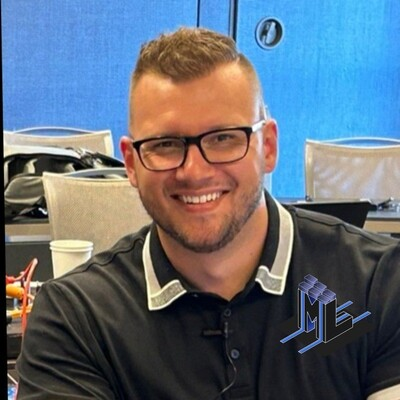
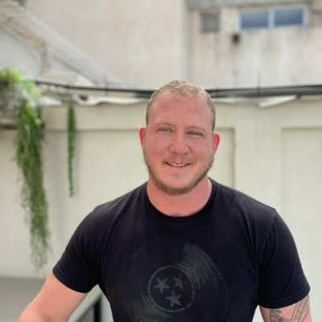
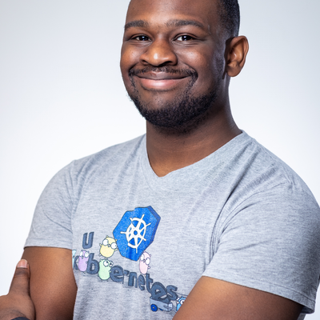
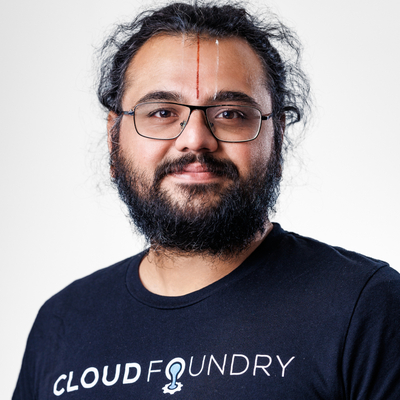

9:00–9:15 AM
Agent Substrate Day
The community gathering for engineers building infrastructure for AI agents on Kubernetes - brought to you by Google, Solo.io and the Agent Substrate Community.
Is Sandbox enough? Is a pod the right deployment format for AI agents? Join us at Agent Substrate Day to interact with project maintainers and early adopters of Agent Substrate.
Hosted by the maintainers and core contributors behind Agent Substrate, this event is built by the community, for the community. Expect deep technical talks and direct access to Agent Substrate maintainers, contributors, and the broader community.
9:00am–5:00pm · Sky SLC, Salt Lake City
Add to calendar Google Outlook Apple
Register on Luma
Sessions
9:20–9:30 AM
10 min

Michael Levan
Agent Substrate 101: Building Isolated, Governed and Scalable AI
Abstract
Agents need to be isolated for what they can and can't access (files/folders, production envs, LLMs, MCP tools, runtimes, etc. - think autonomous and standard Agents) and at the same time, scale up and down based on load, if/how the Agent is being used, and how it's being used.
By default, Agents have access to every file, LLM, command, and authN/Z implementation that you do. At the same time, you're running Agents in a scalable, performant, and reliable way with a proven out orchestration/clustering platform.
Example: You want to run 200+ Agents, but only spread across 6-8 k8s Pods. The Agents still perform as well as expected while keeping the underlying infrastructure costs (both resources and actual financial costs) low.
In this intro to Agent Substrate session, you will learn about the OSS project that makes this happen - Agent Substrate, with key topics including:
1. Build on top of k8s primitives (clustering of resources for performant sandboxed Agents).
2. Implement a specialized and efficient a Control/Management Plane that's built for the world of agentic.
3. How Substrate Actors running Agents are 90% more efficient (proven in benchmarks) for cost optimization in comparison to Agents in k8s Pods.
4. Efficient and much smaller footprints for running Agents via Actors.
9:35–9:45 AM
10 min
Jeremy Cowan
A platform engineers dilemma: agent-sandbox or agent-substrate?
Abstract
As developers clamor to build agents, platform engineers responsible for managing Kubernetes are faced with a dilemma: do they run those agents as pods? Do they sandbox them with agent-sandbox? Or do they run them with agent-substrate? In this session we'll review the differences between these options and articulate why you ought to consider agent-substrate and the advantages it brings.
9:50–10:10 AM
20 min
Carlos Santana
Running Agent Substrate in Production on EKS with microVMs
Abstract
Agent Substrate packs many stateful actors onto a small pool of warm worker pods, now runnable on EKS with a microVM sandbox for pods. This talk is about what it takes to run that in production on AWS: which pieces offload to managed services, actor snapshots on Amazon S3 and the control-plane database on RDS or Aurora PostgreSQL, and where the gaps still are.
Those gaps are the point: no AWS credential provider for actor secrets yet (the interface ships Kubernetes Secrets and Google Secret Manager, not Secrets Manager or Parameter Store), no automated idle-suspension or worker-consolidation policy, and cloud-neutral transport and pod-identity work still worth upstreaming. The goal is an honest map of where Agent Substrate on EKS works today and where AWS and the community can push it.
10:15–10:35 AM
20 min

Mike Moore
kubectl Is Lying to You: What a Live Visualizer Taught Me About Agent Substrate
Abstract
Run `kubectl get pods` on an Agent Substrate cluster and you see a few quiet worker pods. Meanwhile untold numbers of agents are restoring from snapshots, queuing for slots, and checkpointing back to object storage. The interesting state isn't in pods. So I built Substrate Scope, an open-source live visualizer that shows the runtime as it really works: worker bays, a restore queue, the snapshot shelf, and agents moving between them in real time. Its buttons act on the real cluster: they scale the WorkerPool, run a demand-driven autoscaler, fire surge traffic, and reset a wedged pool.
The visualizer I built turned out to be the best way to find Substrate's edges and frankly, to explain how it works for those of us who need crayons to understand things (that would be me). On my laptop cluster I ran 18 agents on two worker pods and served over a thousand real sessions, with a minimum reserved capacity 4.5x lower than the same agents as always-on pods. This talk is a live demo plus an accounting and discussion of what broke along the way and how we work through it.
- My tool ended up with lost running sessions because I read the actors list. Every finished session leaves a Suspended actor behind; mine passed through thousands of entries in a day and started returning partial results. The workers list is the source of truth.
- CPU and memory are the wrong autoscaling signals! Workers are slot-bound and active sessions idle at single-digit mCPU. Substrate rejects when the pool is full instead of queuing, so the real demand signal is in your callers' retry loops.
- My autoscaler made things worse functionally worse. On a serial model backend, more workers just piled more requests onto one generation queue. Everything piled up and timed out and it was a hot mess. We'll look at how we address this.
- Killed sessions left ghost actors pinning workers while the pool looked idle. This made me sad but it's fixable.
- "Pods vs. substrate" charts lie if you compare usage. Idle pods use almost no CPU but reserve it forever. Reservation is the number to keep an eye on.
You'll leave knowing what to watch on a Substrate cluster, what to scale on, which failures to expect under load, and a tool you can point at your own cluster today.
10:35–11:00 AM
Break
11:00–11:20 AM
20 min

Keith Mattix
Network Policy at Substrate Scale
Abstract
Congratulations, you've got substrate running on your cluster! But after the eureka moment fades, you're now tasked with figuring out how to integrate your shiny new actors into your existing security and compliance posture. Come join us for an exploration of the tools substrate provides to establish a zero trust architecture for agents and how those tools compose other cloud-native-components like service mesh and Kubernetes NetworkPolicy.
11:25–11:55 AM
30 min
Greg Castle, Taahir Ahmed
Pleading the Agent: Proof of Agent identity
Abstract
If your agent is off hacking the gym booking system to get you a class appointment, you’re going to want proof that it was the agent, not you. Agent identity touches practically everything: what systems agents can talk to, what credentials agents can use, what authorized access agents have, whether/how agents can impersonate humans, and how policy applies to individuals or groups of agents. In this talk we will explain how Agent identity differs from standard human/service-account identity. What are the new opportunities and challenges? Why can’t we just use existing OAuth/X.509/whatever? We’ll cover how substrate agent identity works today and how that can be used to integrate with other systems. We’ll end with a look at the future for agent identity inside Substrate.
12:00–12:05 PM
5 min

Ram Iyengar
Five Reasons I thought Agent Substrate Would Fail
12:05–12:10 PM
5 min
Anish Ramasekar
Pause Here, Resume Anywhere: Inside Substrate's Snapshot Plugin API
Abstract
Suspend an agent and its memory and disk go to object storage. Resume it and they come back, maybe on another node. Whose storage? Yours.
objectstoresnapshot/v1 is Agent Substrate's gRPC plugin API for snapshot storage. In ten minutes: where the line sits (substrate decides what moves and when a snapshot is committed; the plugin moves bytes idempotently and owns integrity), what's still open, and a live demo of an agent suspended on one node and resumed on another through a plugin the project doesn't ship.
12:10–12:15 PM
5 min
Benjamin Elder
Evolving The Substrate Dataplane
Abstract
We will cover the evolution of atelet and ateom, sandbox support, where substrate is at now and where we might go next.
12:15–12:20 PM
5 min
Bowei Du, Lior Lieberman
Truly Sandboxed Networking: Moving beyond MVP
Abstract
In this session we will discuss the current Substrate network isolation and directions for improving isolation for Actor workloads. What we currently have in the project is closer to a minimal viable infrastructure and this breakout seeks to map out the post-V1 roadmap for the project.
12:20–1:20 PM
Lunch
1:20–1:25 PM
5 min
Nick Nellis
Postcard from 2028: A Platform Team’s Retro on Agent Substrate
Abstract
It’s November 2028. A 10,000 person company has run its agent platform on Substrate for two years. There are 20 agents for every employee, most sessions are started by other agents rather than people, and some cases stay suspended for weeks. This talk is that platform team’s retro: what worked, what hurt, and what they’d tell themselves in 2026.
Each story in the retro starts from a trend we can already see, including power users with a hundred agents, agent-to-agent fan-out, long-running case work, shared agents acting on someone’s behalf, and unattended automation. Each one is followed to where it ends up.
Then we come back to today. Substrate is in alpha, and every one of those stories comes down to a decision that’s still cheap to change. We’ll walk through the personas, use cases, and a concrete list of asks, backed by customer design sessions and measurements from running kagent on Substrate.
1:25–1:30 PM
5 min
Vincent Caldeira
Instant Circuit Breakers: Sub-15ms Action Verification in Agent Substrate
Abstract
Having AI agents verify their own actions—like inspecting terminal outputs or validating API responses—by re-querying a large LLM wastes over 1.5 seconds per step. Furthermore, text-based LLM confidence statements ("I am 90% sure this worked") are uncalibrated and unsafe for policy enforcement. In this talk, we present an architectural pattern for real-time guardrails built directly into Agent Substrate. By combining Agent Substrate’s ephemeral Actor execution model with lightweight binary decision models (such as AnyJev or Laya) via agentgateway and agent-sandbox hooks, we evaluate binary yes/no verification conditions in a single pass under 15 ms. This provides platform teams with mathematically calibrated metrics to halt failing or unauthorized agent actions instantly, eliminating positional bias and securing agentic runtimes without generating text tokens.
1:30–1:35 PM
5 min
Omer Yahud
Suspend-safe networking
Abstract
Suspending an actor today cuts every TCP connection it holds, so an agent waiting on a slow call cannot be suspended.
This session shows a concept design that keeps those connections alive while the actor is suspended and restored on any worker, wakes it when data arrives, and demonstrates it live with an inbound request that waits on an outbound call across a suspend.
1:35–1:40 PM
5 min
Mesut Oezdil
Where Do the GPUs Go When Your Agents Run on Agent Substrate?
Abstract
AgentSubstrate puts agents to sleep when they are idle and saves their memory and files in a snapshot. GPU memory can't be saved this way, so GPU work doesn't fit into the sandbox.
My setup keeps the GPUs outside. kagent agents run on Substrate and send requests to a local model on Ollama. HAMi splits each GPU into slices with memory limits, so many agents can share one GPU without one agent taking all the memory.
I'll show the setup, the numbers I got when many agents woke up at once, and what broke on the first try.
1:40–1:45 PM
5 min
Eliran Wolff
Where Multiplexing Pays: Scheduling Sandboxes for RL Rollouts
Abstract
Agentic RL fans each training step into many mostly-idle sandboxes. We ran NeMo Gym’s SWE-bench agent on Agent Substrate (suspend/resume multiplexing during LLM calls) and OpenSandbox (one pod per rollout).
In some cases we were able to lower the wall time by over 30% by suspending actors on Substrate during LLM calls. We’ll walk through how we benchmarked both platforms, and the surprises we hit along the way.
1:50–2:20 PM
30 min
Omer Yahud, Eliran Wolff
Scheduling sandboxes like threads: a policy layer for Agent Substrate
Abstract
Agent Substrate multiplexes many of actors onto a small pool of warm workers, but it does not decide who runs next.
When a pool is full, resume calls to ateapi fail, and the router parks the request and retries, and whichever retry lands first wins the worker.
For reinforcement learning rollouts and coding-agent fleets, where sandboxes outnumber workers by an order of magnitude, that order decides how long a generation step takes and which rollouts make progress at all.
This talk presents an orchestration layer we are building on top of Agent Substrate's public API. It adds what an operating system scheduler gives threads: a resume queue ordered by policy, preemption of idle sandboxes to make room,
a free-worker buffer, and per-pool policies declared as a Kubernetes resource. Underneath, KAI Scheduler places the worker pods themselves, so tenants get hierarchical queues with quota, fair share and reclaim across their WorkerPools.
We will walk through the design and example use cases and configurations for effective multiplexing.
2:25–2:45 PM
20 min
Mofi Rahman
Using Substrate for anything but Agents
Abstract
Agent Substrate is for agents. It is right there in the name. Or is it? Strip away the LLM orchestration frameworks, and what you are left with is a systems engineer's dream: an ultra-high-density, multi-tenant sandboxing platform built on Kubernetes that bypasses standard Pod lifecycle constraints.
What happens when we hijack these primitives for workloads that have absolutely nothing to do with AI? In this talk, we will explore the limits of Substrate by utilizing its core building blocks: native process-level suspend/resume, rapid rehydration, and pod-decoupled scaling.
Through this exercise of “unconventional systems-engineering design patterns” we’ll look at the good ideas, the terrible ideas, and how pushing this infrastructure to its limits helps us all gain a better understanding of why these exact primitives make Substrate the perfect foundation for the agentic era.
2:45–3:15 PM
Break
3:15–3:35 PM
20 min
Jaana Dogan, Lior Lieberman
Agent Substrate Environment
Abstract
When we first revealed Agent Substrate, people were mind blown to see we can suspend and resume an actor at every tool call without impacting user experience. Built on top of Agent Substrate, Agent Substrate Environment is aiming to provide a higher-level abstraction designed to deliver a fast agentic environment for the entire community.
As agents evolve into autonomous problem-solvers, they require secure, stateful, and scalable environments to execute code, manipulate files, and run commands safely. While Agent Substrate supplies the sandbox runtime and orchestration primitives, we developed a higher-level abstraction that focuses on remote file system and process lifecycle operations. This new layer accelerates onboarding and provides a production grade interface for agentic systems that can use remote environments. The environment abstraction also aligns well with the model commonly used by frontier labs, acting as the operational "hands" that execute commands for the "brain."
We will dive into how we built an agentic environment abstraction on Agent Substrate and go into details like actor lifecycle management. Additionally, we will share how this layer helped build multiple production-grade integrations at Google. Ultimately, our goal is to keep this project minimal, modular, and reusable for the broader Agent Substrate community and future ecosystem.
3:40–4:25 PM
Panel
4:25–4:35 PM
More agents. Less overhead.
Sky SLC
149 Pierpont Ave
Salt Lake City, UT 84101
Join us on Tuesday night after KubeCrawl + CloudNativeFest to keep the party going!
Register now: Agent Substrate Community Party